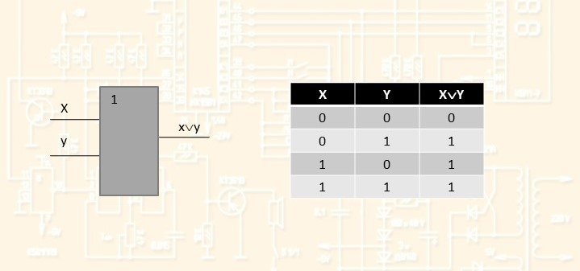
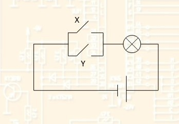

Схема ИЛИ (дизъюнктор) реализует дизъюнкцию двух или более логических значений. Условное обозначение схемы ИЛИ: X y x\/y 1 
 Дизъюнктор можно условно изобразить схематически электрической цепью вида: X Y Электрическая схема: источник питания лампочка ключи провода Лампочка будет гореть, если хотя бы один контакт находится в положении «вкл.» Дизъюнктор условно изображается схематически электрической цепью вида: